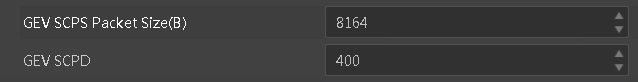
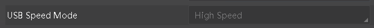

Troubleshooting Method
-
If exceptions occur in the program developed based on the SDK, you can run the MVS client to check if the corresponding functions work normally.
-
If the MVS client is normal, and the exceptions only occur in the program developed based on the SDK, then the problems might lie in the program.
-
If the exceptions also occur on the MVS client, you can refer to the solutions listed below.
-
If your problems still cannot be solved, please record the problem information (including problem details, pictures, MVS version No., and dll library name and version No.), and contact the technical support for further help.
Question Causes and Solutions
GigE Vision Camera Related Questions
Question 1: Why is there packet loss?
Cause: Abnormal network transmission environment causes packet loss during data transmission.
Solution:
-
Check if the bandwidth is sufficient.
-
Enable the NIC jumbo frame.
-
Disable firewall.
-
Increase the SCPD gradually till no packet loss happens. See the picture below.

Question 2: Why do I failed to perform the software trigger command when calling SDK?
Cause: The trigger source is not set to software trigger.
Solution: Before performing software trigger command, make sure the camera is in software trigger mode and the trigger source is set to software trigger.
Question 3: Why is the camera often offline?
Cause:
-
The NIC card is in sleep status.
-
The network port is not plugged in properly.
Solution:
-
Set the power option of operating system to avoid the computer going to the sleep status.
-
Check the network port connection status and fasten the connection.
Cause:
-
The camera is occupied.
-
The configured heartbeat timeout is too long, and the program exits abnormally without executing the API of shutting down device or destroying device handle, so the device remains occupied.
Solution:
-
Check if the camera is occupied or connected by other application.
-
Wait until the heartbeat timed out or unplug the camera power.
Question 5: Why error code is returned during the debugging process?
Cause: Debugging will cause heartbeat sending timeout.
Solution: Lengthen the heartbeat time (example: 30 seconds, and set the value to 3000). The default heartbeat time is 3 seconds. See the picture below:
Cause: This API adopts active search method, and data might not be obtained when calling for only once.
Solution: Increase the timeout period.
Question 7: Why the camera cannot be opened after finishing debugging abnormally?
Cause: To avoid the heartbeat timeout under debug process, the default value of camera heartbeat timeout is 60000ms (60s). So sometimes the camera cannot be opened after finishing debugging abnormally.
Solution: Shut down camera before exiting debugging.
Question 8: How to fix error "ld:-lMvCameraControl cannot find libMvCameraControl library" when compiling?
Cause: After installation, the environment variables might not take effect in the current console.
Solution: Check whether the environment variables take effect, and whether the lib library exists.
1) First, make sure that the environment variables about the SDK have taken effect.
echo $MVCAM_COMMON_RUNENV
If the command does not print the corresponding SDK path, then execute:
cd Installation folder path
source set_env_path.sh
2) If the environment variables are normal, then find the lib library path to see if the library exists.
Question 9: How to fix error "ld:-lMvCameraControl not compatible symbol" when compiling?
Cause: SDK version and hardware environment mismatch, or compiler toolchain does not support.
Solution:
1) Check if the SDK version and hardware environment are matched:
uname -a
cd /opt/MVS/lib/64
readelf -h libMvCameraControl.so
2) Check if the gcc version and corresponding SDK version are matched, the gcc version of different SDK is shown below:
x86_64: gcc-4.4.7
i386: gcc-4.4.7
armhf: gcc-4.8.2
aarch64: gcc-4.9.4
arm-none: gcc-4.1.1
If used gcc version is lower than the SDK required version, you can use gcc with higher version. For details, please contact our technical support.
Question 10：Why can't I enumerate the GigE cameras?
Cause: The computer IP address is not static, and the LAN IP address cannot be assigned on Linux system, so the GigE camera cannot be enumerated.
Solution: Set the computer IP address to static.
Question 11: Why the same camera is enumerated twice in MVS?
Cause: In Linux, for some PC, when a static IP is set, and then the mode is switched to DHCP, the static IP still exists. In this occasion, a camera might be enumerated twice. Normally, for most PC, when switching to DHCP mode, the previous static IP will be deleted automatically.
Solution: Delete the static IP.
USB3 Vision Camera Related Questions
Question 1：Why can't the MVS get the data or why is the frame rate far smaller the actual frame rare?
Cause: The camera is connected to a USB 2.0 interface and the bandwidth is not enough.
Solution: Make sure the camera is connected to a USB 3.0 interface. You can check the USB version information by the following methods:
1) Check the digit of the icon in front of camera name in the device list.

2) Check whether the value of USB Speed Mode in the device property is Highspeed or SuperSpeed.
